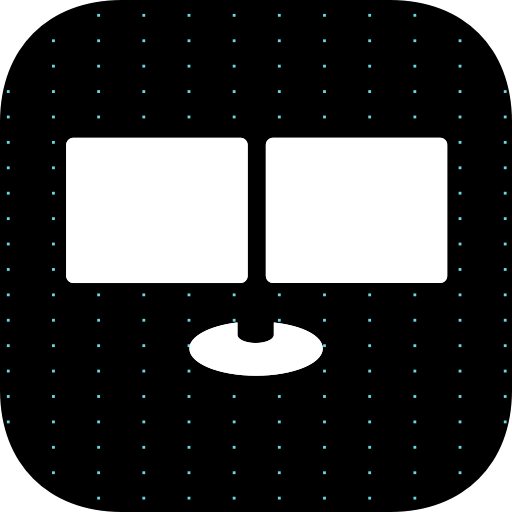
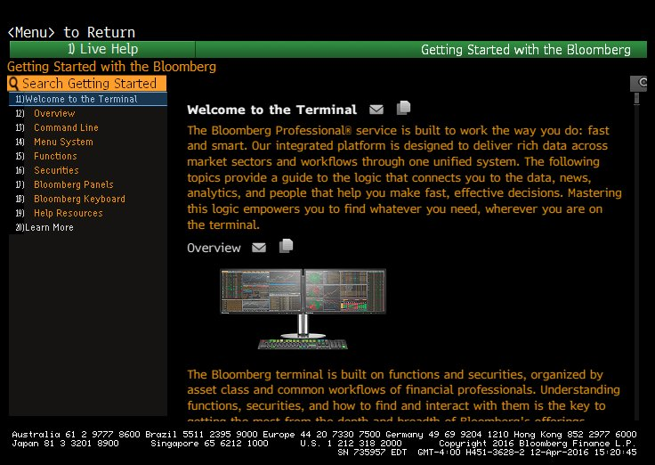
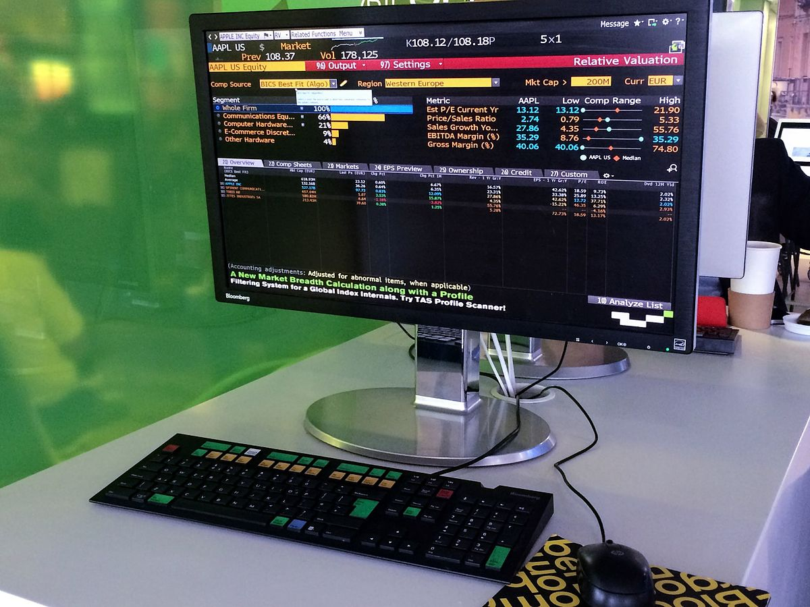
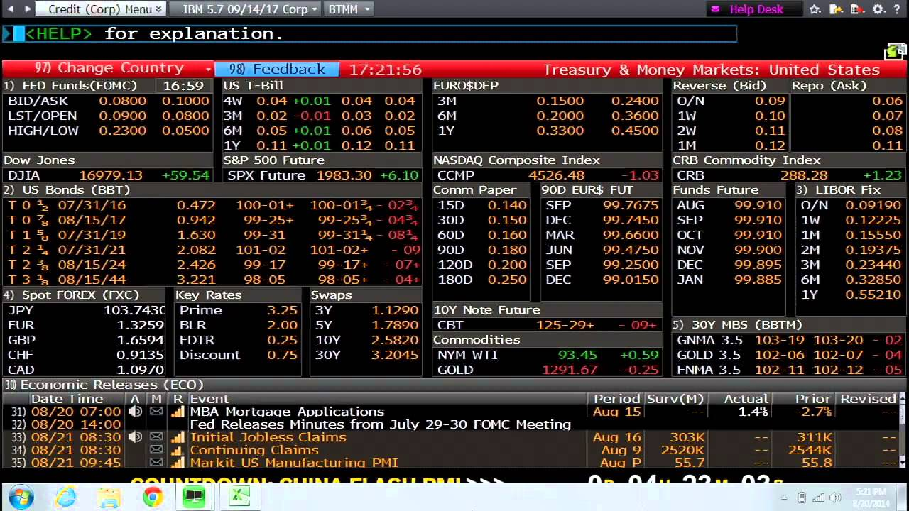
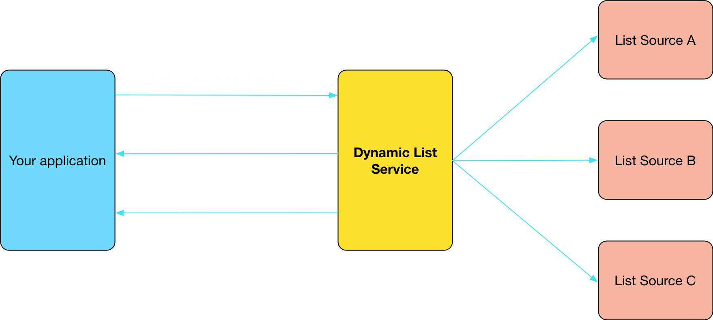
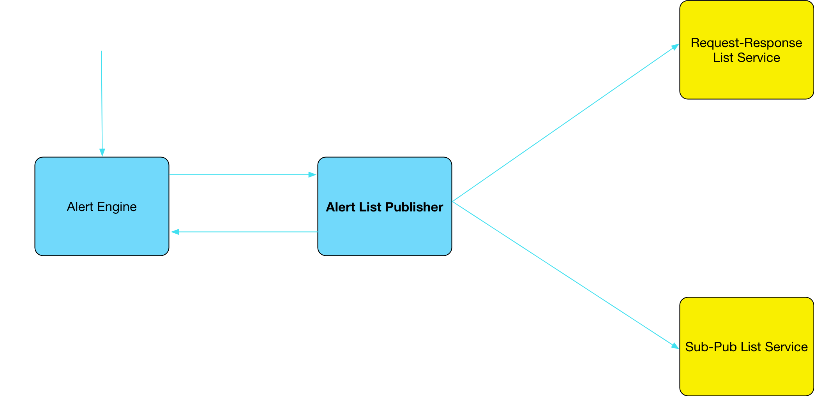
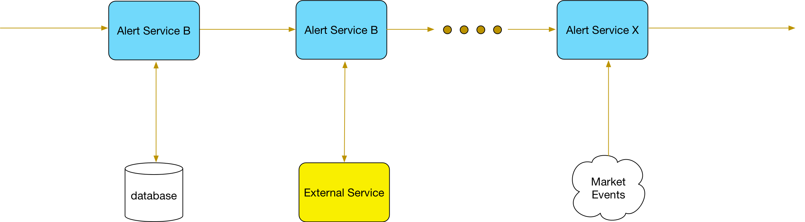
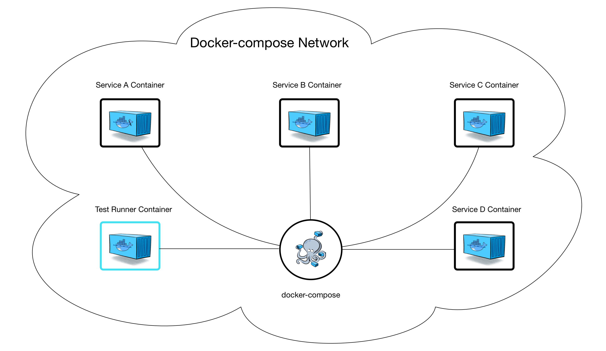
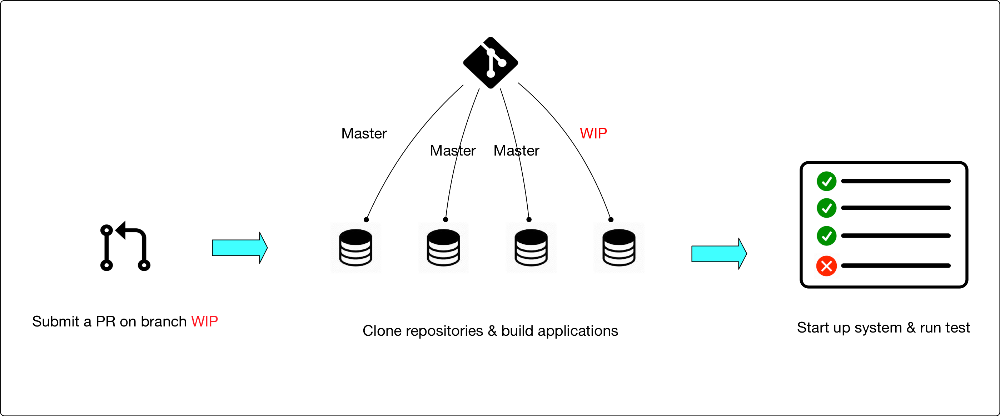

Bloomberg L.P.
Industrial Placement
Presented by Hanou Chen (hc3314)
2017.10.05
Bloomberg L.P.
Company Background
- Financial software & news
- Founded in 1981
- 4,800+ engineers
- 325,000+ subscriptions

Bloomberg Terminal 
- Provides market data and analytics
- Proprietary communication system



Alerts Team
- MLRT, Market Data Alerts - Alert me when...
List alert in MLRT
- MLRT - create market data alerts on a single security
- What about alerts on a list of securities?
- Lists can be created by other functions - PORT, MON
Building the list alert feature
- □ Frontend UI changes
- □ Changes in existing backend services
-
□ Building a backend service for getting list data
- - What securities are in security monitor 2 of user Tom?
- - Did Tom change the security monitor?
Getting list data in Bloomberg

Getting list data in Bloomberg
List publisher for Alerts
Building the list alert feature
- ☑ Frontend UI changes
- ☑ Changes in existing backend services
- ☑ Building a backend service for getting list data
- ☑ List alert feature rolled out to internal users
Alert system testing using docker
The Alerts pipeline
We want to build a test that ..
- tests the entire alerts pipeline at once
- is fully automated
- is fully isolated
Containers
A container image is a lightweight, stand-alone, executable package of a piece of software that includes everything needed to run it: code, runtime, system libraries, settings.

Docker provides tools that make it easy to package, ship and run any application in a lightweight container.
Build the test with docker
Integrate the test into CI pipeline
Learning Outcomes & Conclusion
-
Better understanding of relevant courses
- Software Engineering - Design
- Concurrency
- Compiler
- Good coding practices, techniques
- Soft skills